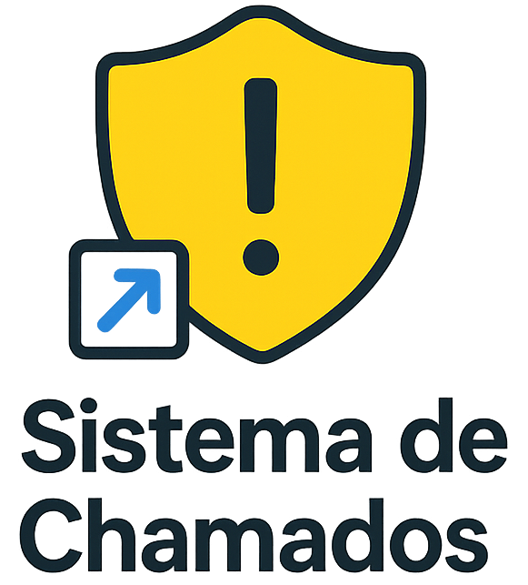
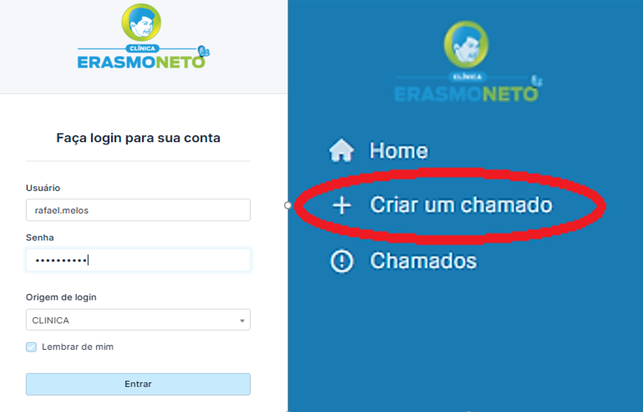
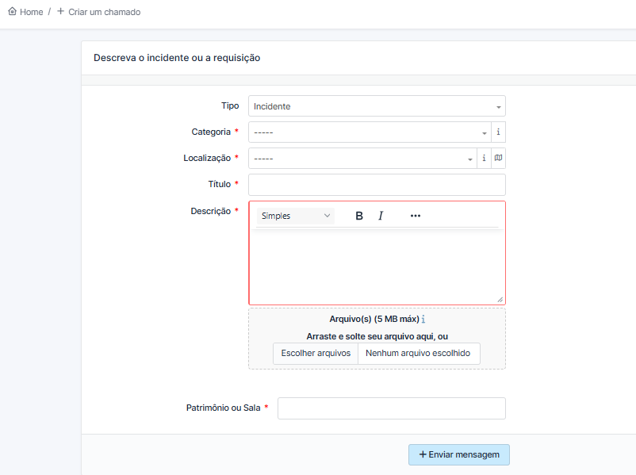
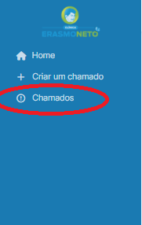

Guia Rápido: Abertura de Chamado
1. Acesse o sistema clicando no ícone disponível na sua área de trabalho.
2. Faça login com suas credenciais (as mesmas utilizadas para acessar o computador) e após isso
clique em "Criar um chamado".

3. Preencha os campos obrigatórios, descreva o problema e clique em “Enviar mensagem”.
4. Para acompanhar a solução, entre no menu “Chamados”.
5. Clique no título do chamado para visualizar os detalhes. Você poderá verificar:
- Se já foi concluído;
- Se é necessário algum outro passo para finalizar;
- Ou se há dúvidas do técnico sobre a solicitação.
6. Considerando que o chamado foi solucionado, aprove ou recuse a solução e registre com um comentário informando o motivo.